近期的 Solo Travel
提醒：这个页面包含大量未压缩的高清图片和视频，而且没有任何缓冲机制
Solo Travel 是一个人的冒险。
最近正好是中秋节和国庆节假期，出门去附近的城市逛一逛，前后去了天津、唐山、西安。总共没去几天，在一个城市呆最多三四天就累了，觉得没什么好逛的了，就那么几个景点。
天津
这是去天津的攻略图，准备去这几个景点，它们在地图上的位置是邻近的，或者有顺序的，去的时候照着地图的位置走就可以了：
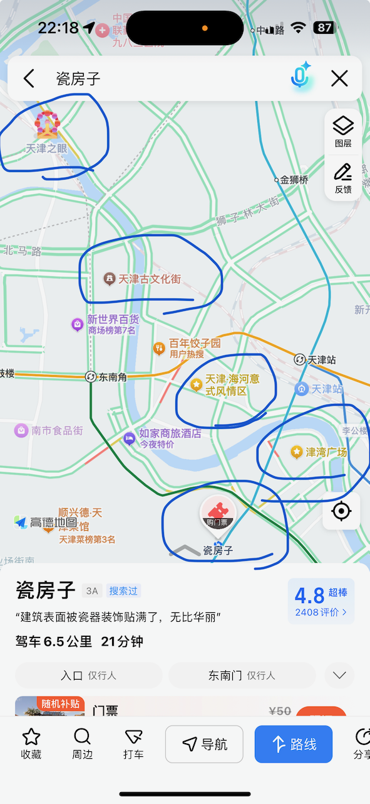天津之眼
首先去的是天津之眼，天津的标志性建筑：

沿途的水景很美，随便一拍就很好看：
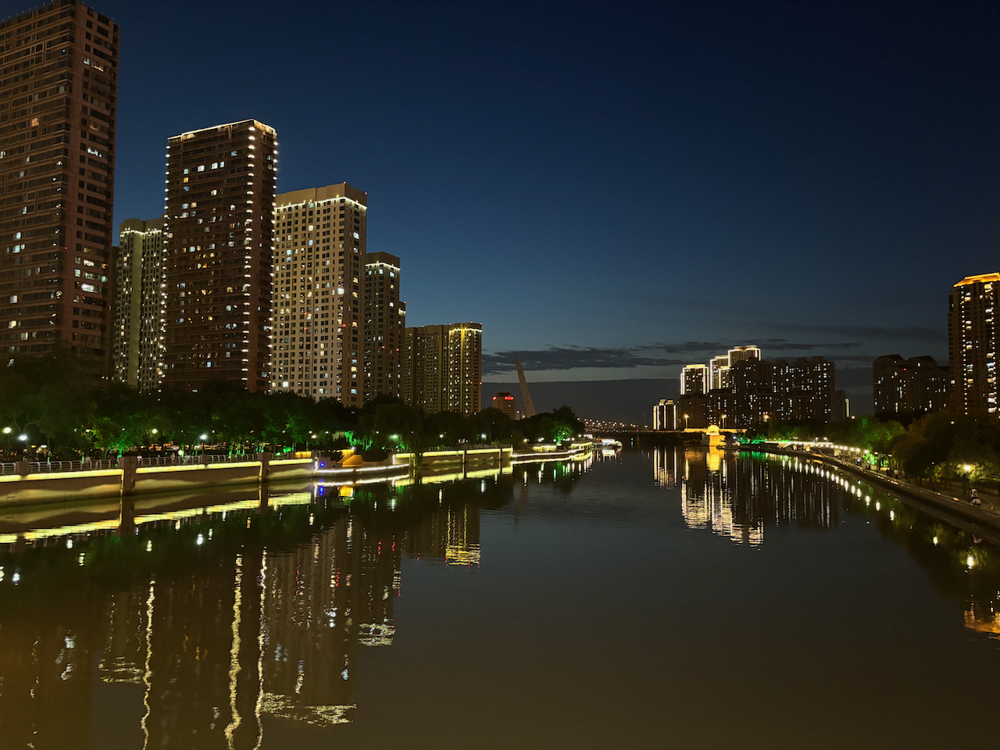天津之眼下面是一条类似于商业街的街道，沿河两边有很多人，像是休闲广场一样的氛围。有跳广场舞的，也有不少开直播唱歌的，可以点歌也可以唱歌。也有小吃街：
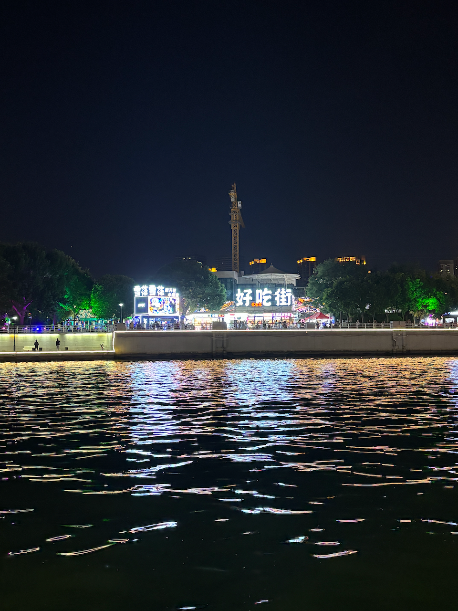夜景真的挺出片：

这个无意间拍到游船的视频挺好看，水面和灯光的颜色混合在一起，加上远处的夜景：
这是好吃街的正面，在一开始图片的对岸：
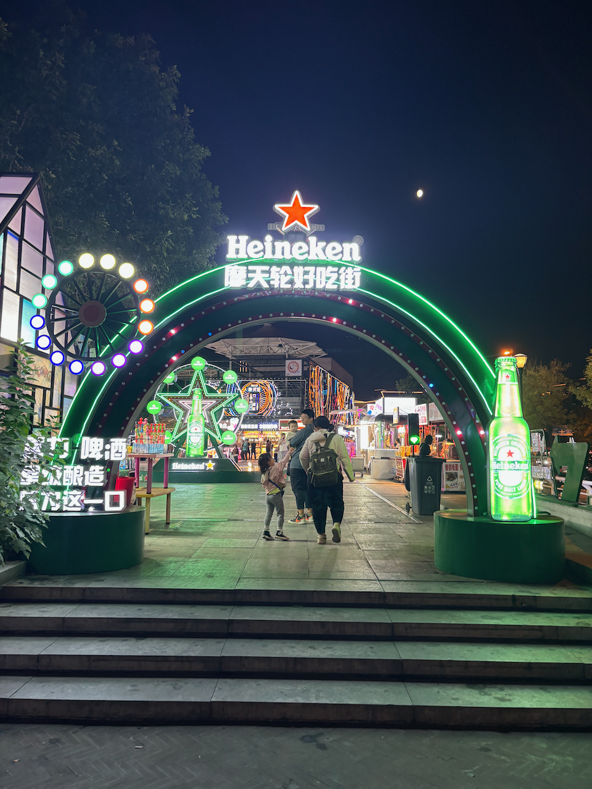这张街边小摊的照片也不错：
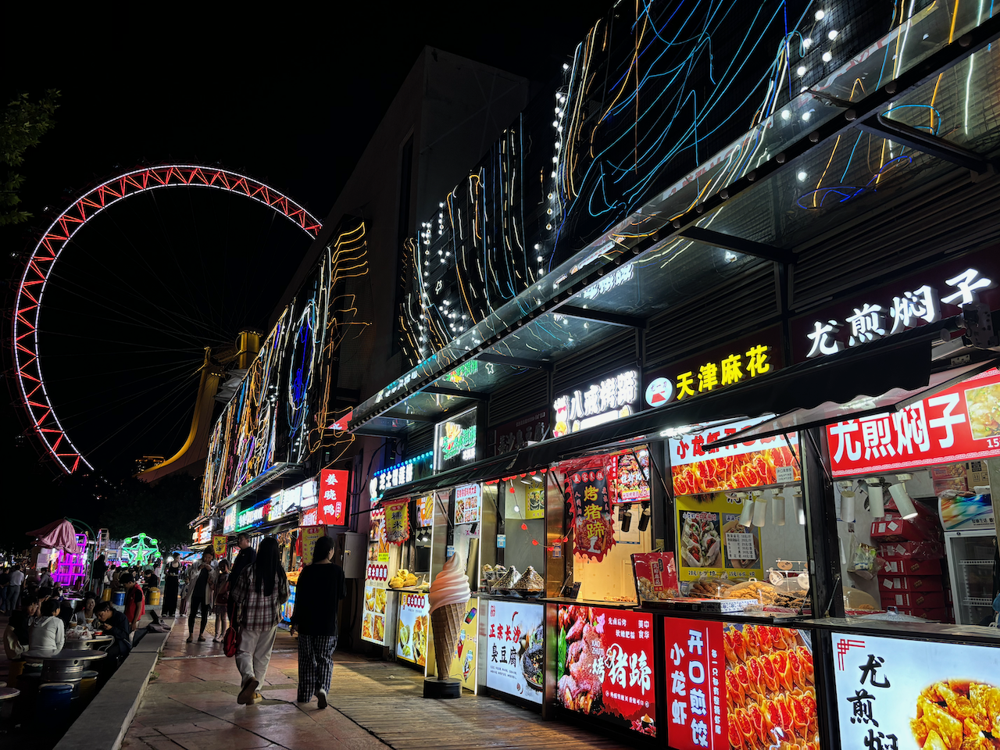在天津等你，这是一家啤酒店的牌子和座位，几乎没有生意：
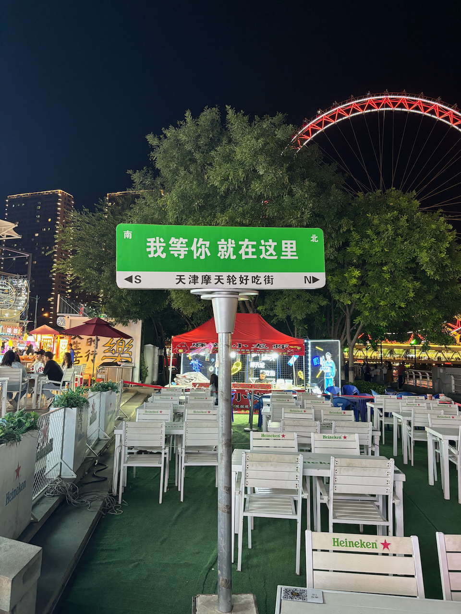在另一家小店门口看到了路飞的人偶站在阳光号上：

在天津之眼的行程就这样结束了。
天津古文化街
古文化街就是一条商业街，有一堆卖古玩手串之类的摊位，再就是一些比较常见的店面，两侧行人也不少：
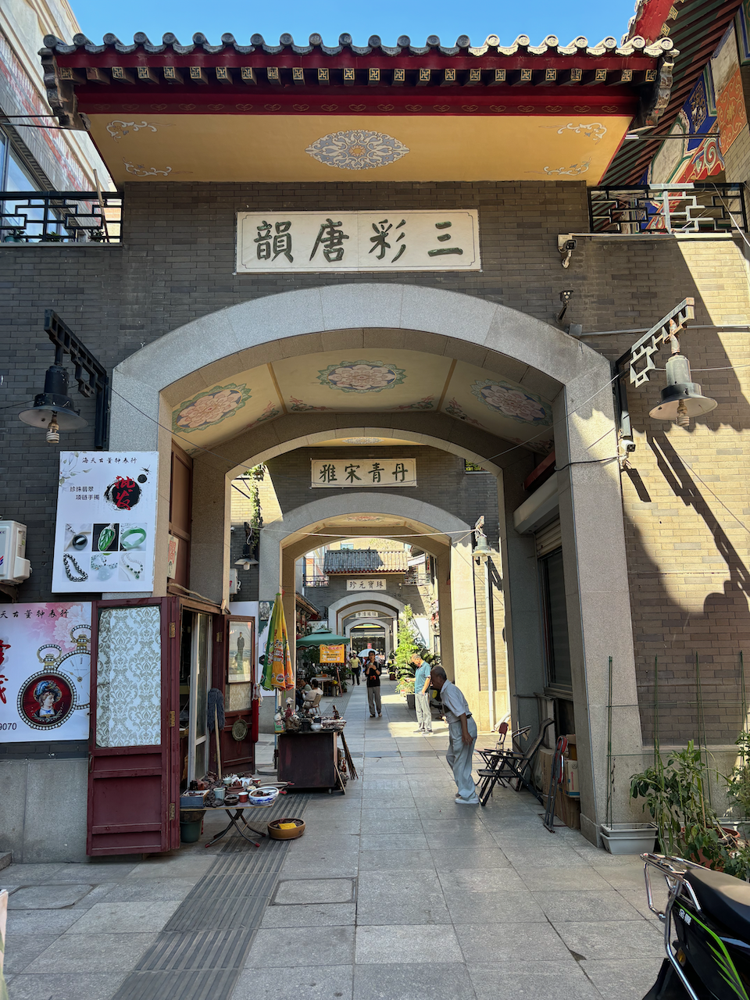拍到了一个不知道什么来头的菩萨雕塑：

街上有不少揽客听相声的小摊位，正好累了就随便找了一家进去休息一下，作为听了几十遍郭德纲相声录音的听众来说，这家小馆子的相声还可以，有内容也好笑，觉得出乎意料值得票钱：
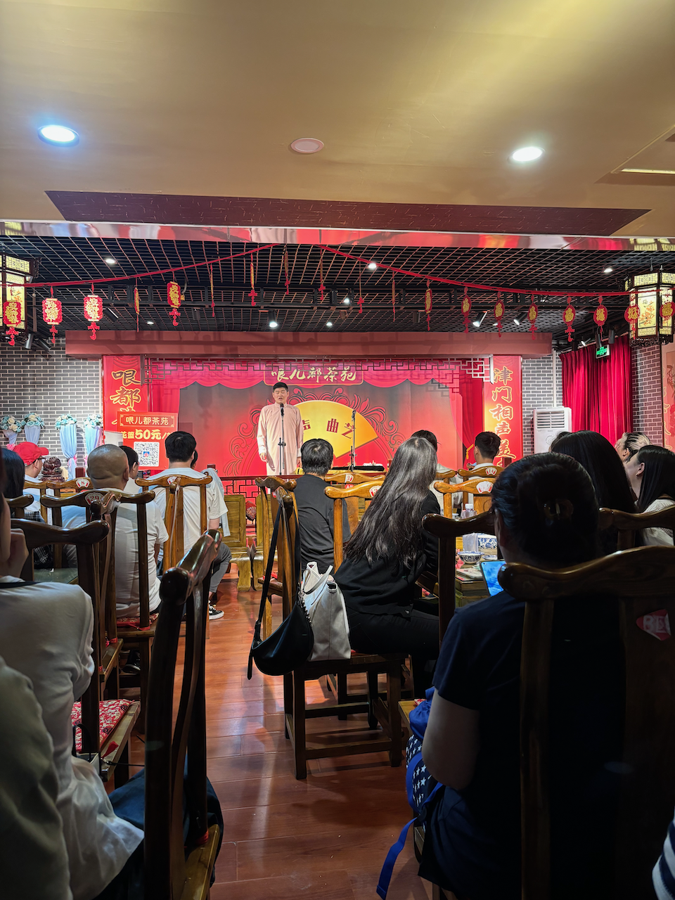听完相声出来就离开古文化街了。
意大利风情街区
简称意风区：
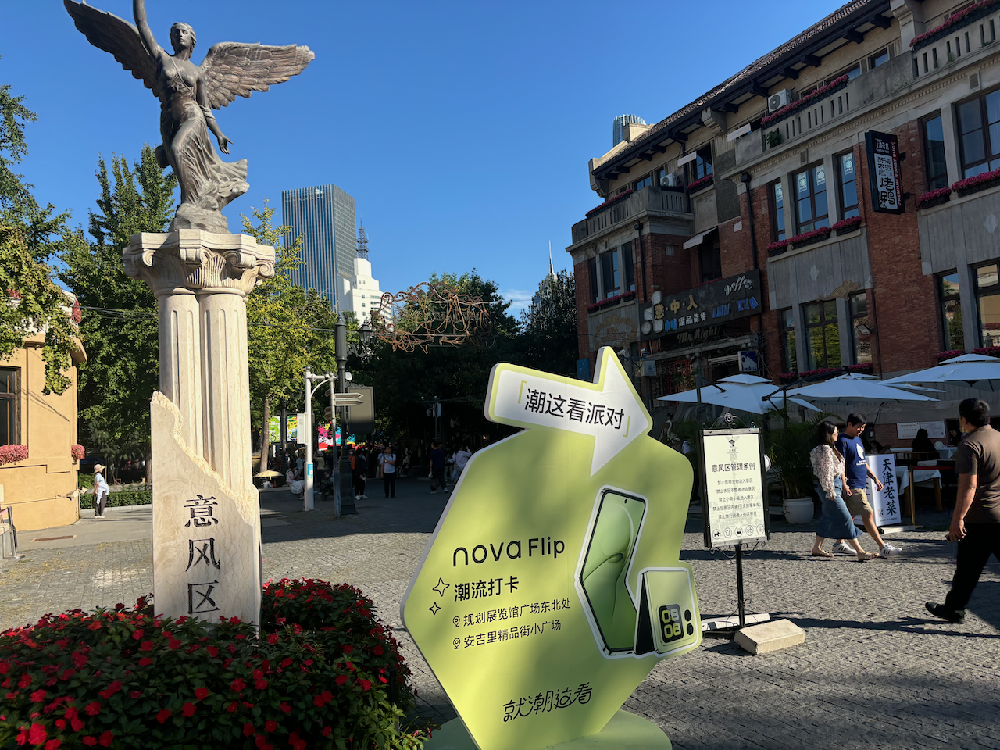入口有一些欧式建筑适合女生拍照，此外就是一条普通的商业街了，和798一样的感觉。遇到一个破旧的雕塑尺度还挺大：

瓷房子
瓷房子装修很华丽，人也是真的多，别说进去要不要门票，人多到根本进不去：
在门口看了看就走了：

津湾广场
在天津的最后一站津湾广场：

人很多挺热闹：
整体风景不错，吃完饭遛弯的好去处，从旅游的角度倒是没多大看头。
滨海新区
最后没去滨海新区，在小红书上坏评价很多，关键是离天津太远，来回都很麻烦，而且不知道现在不是海鸥的季节，如果在公园里能喂海鸥的话我是一定会去一趟的，但是最近似乎不一定有海鸥：
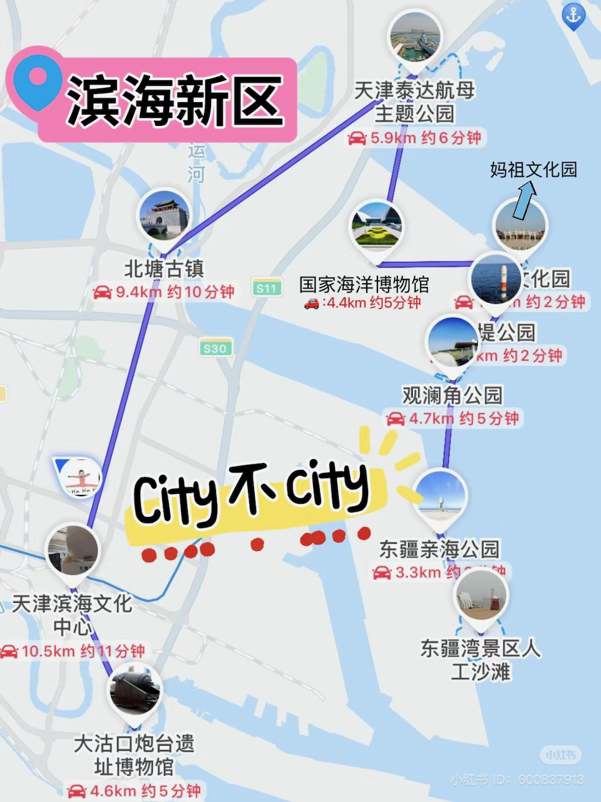唐山
河头老街
去唐山不需要做什么攻略，因为只去了一个景点，河头老街，据说风景很好很出片，还有演出。

去的比较早天还没黑：
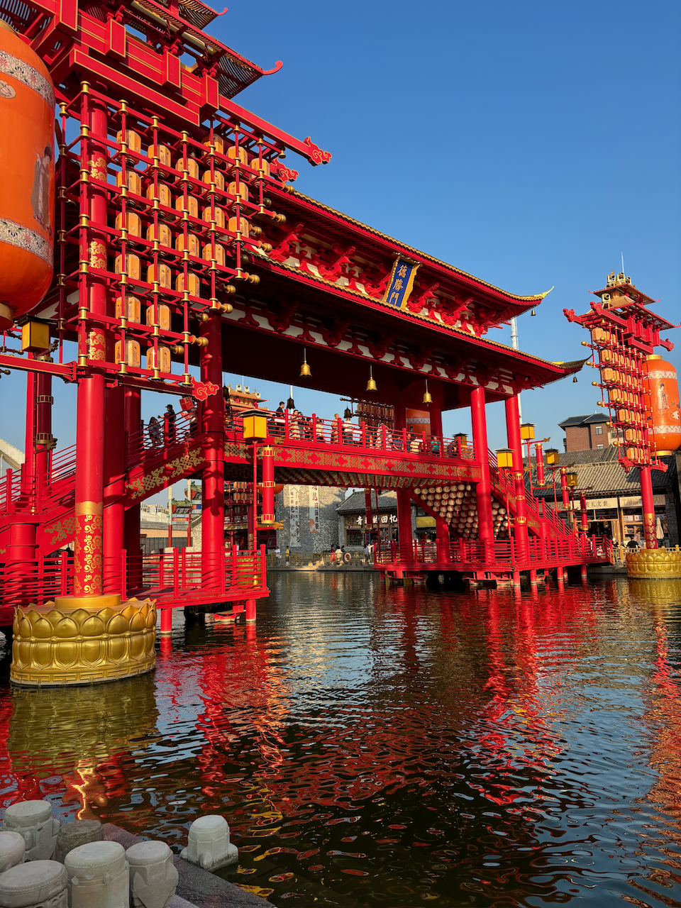偷拍了一个小姐姐的背影，汉服真的挺好看：
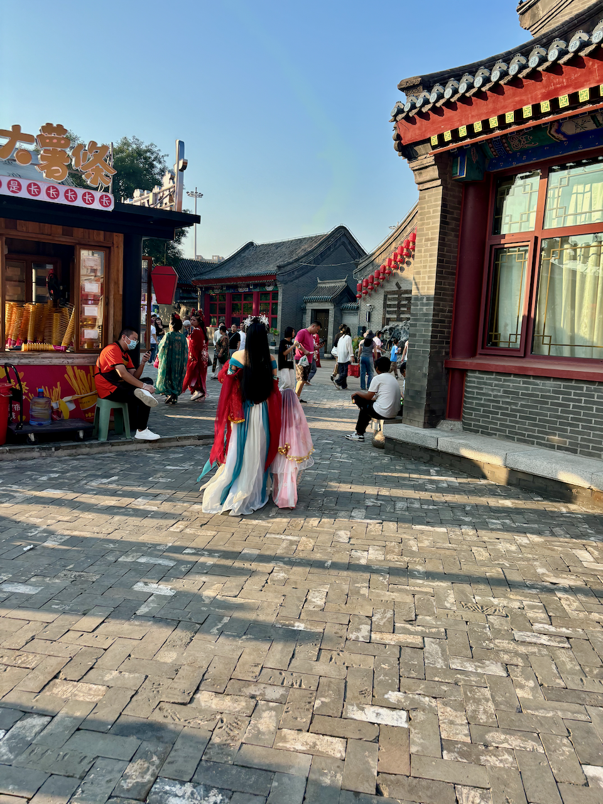有一个湖里游着很多鲤鱼，场景是很多小和尚看着一个大书生，好像是有一段故事的，没太留意具体的故事：
到了晚上，街边的灯就开了，各种演出也才开始，真正进入河头老街好玩的时间段。
先是看到了路边小姐姐跳舞：
于此同时，隔壁有一个王府招亲的互动演出：
再往前走，街边有个小摊变小魔术：
还有放电影的，播的大话西游：
到了晚上，白天的书生雕塑更好看了：
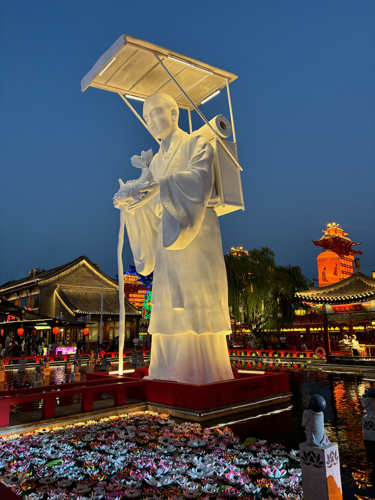表演杂技的：
整个河头老街最美的风景位置：
图片：

视频：
更完整的视频：
非常非常美，号称水上大唐不夜城，有美景有演出，整个唐朝元素的热闹市井形象，都体现出来了（比西安真正的大唐不夜城好太多了）。
身处于美丽的景色中：
会变颜色的大树和跳舞的小姐姐：
吹笛子演出：
第二个最美的风景位置：
图片：
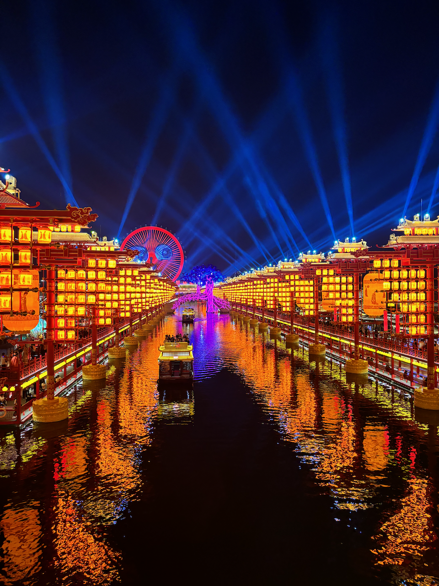视频：
人是真的多：

街边还有很多各式各样的小表演。
整个景点最最最最精彩的压轴演出是打铁花，光是这个看台的位置就很值得期待了，和在广场上的封闭环境不一样，这里能看到整个街区的夜景：
非常华丽的开场，配合背景音乐很燃：
这一段是凑齐了各种要素，打铁花、火魔方、水上飞人：
看完打铁花出来，紧接着就能看凤凰飞天表演：
精简版视频：
完整版视频：
看一次这样的演出才真的不虚此行！
西安
去西安准备的攻略图，就这么几个地方，最开始的动机还是想看看真正的大唐不夜城。

兵马俑
本来没想看兵马俑，后来有人推荐可以去，说场面挺震撼，其实我看后确实没太大感觉，一堆土坑和一堆泥人，可能是我没理解吧。去看兵马俑的人特别特别多。
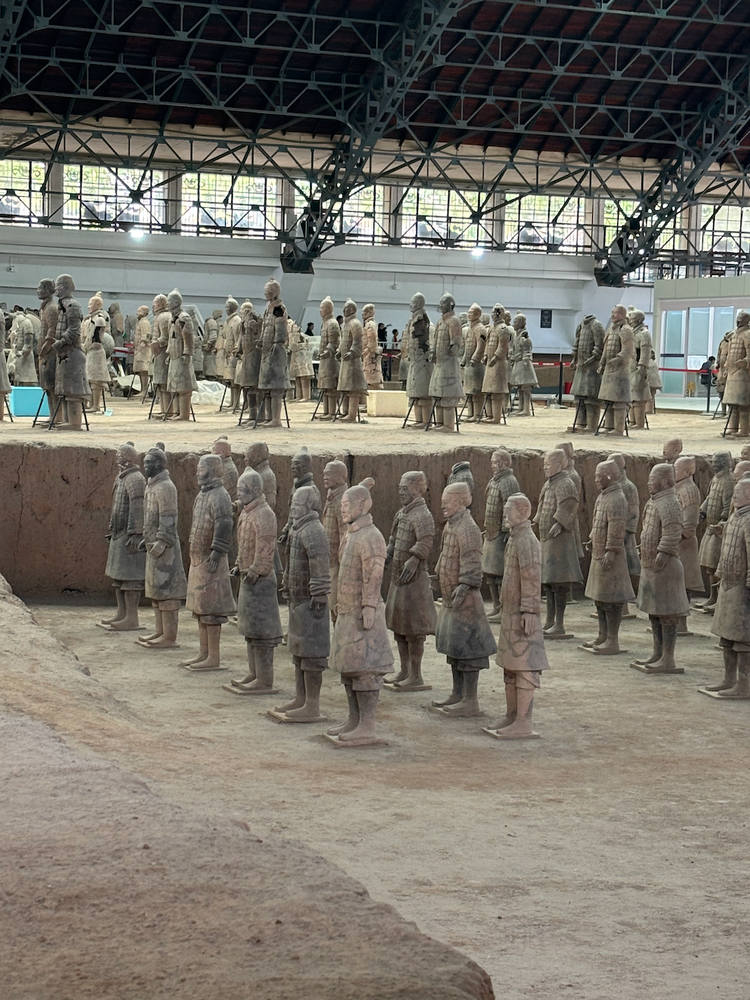兵马俑的 3 个坑出来后紧接着去丽山园，秦始皇真正的坟墓在丽山园里，公开对外参观的是几个陪陵墓。最出名的可能是这几匹马：
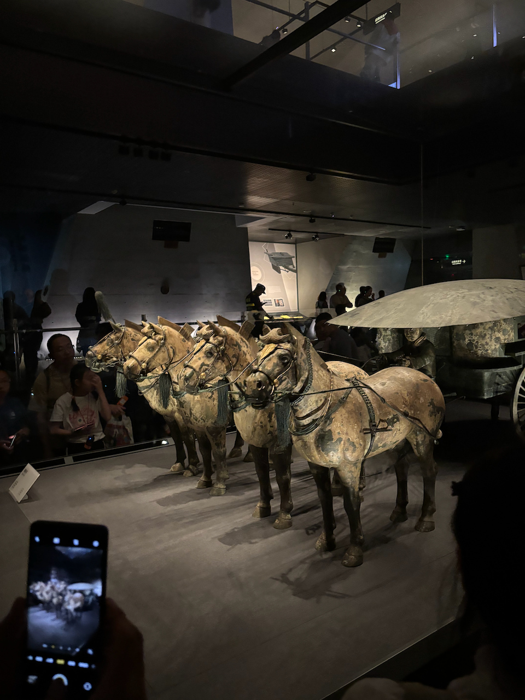大唐不夜城
大唐不夜城徒有虚名，名气很大实际上啥也没有，表演也都放到白天了。
这么个小演出人挤的里三层外三层：
人好多：

偷拍到两个小姐姐的背影，衣服挺好看：
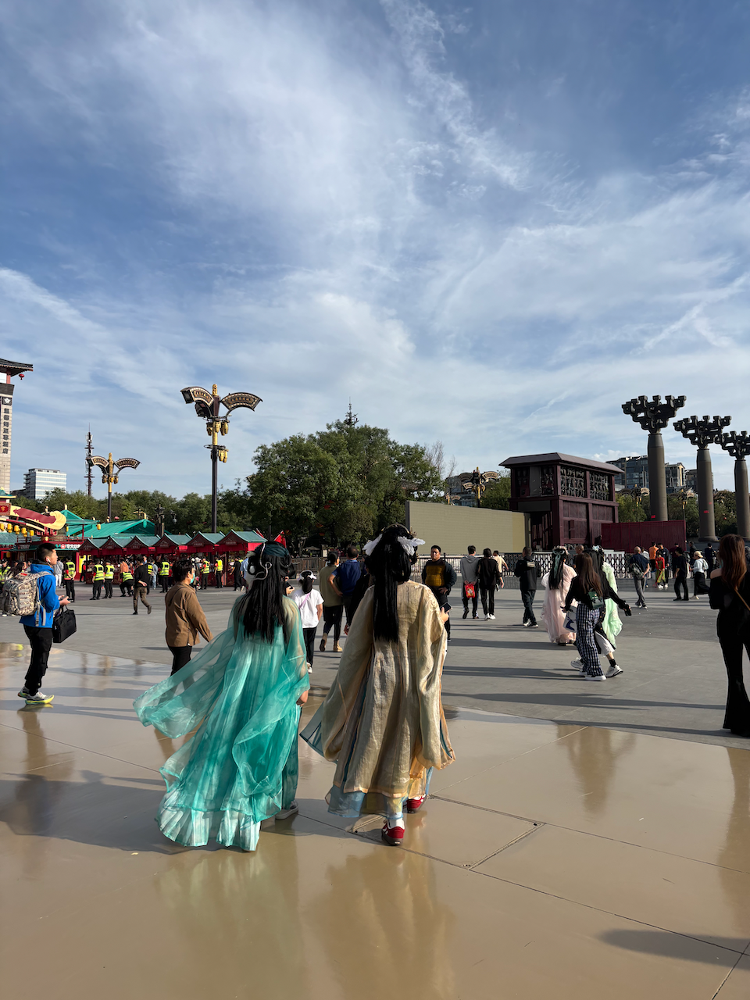天终于黑了，以为晚上灯光会好看一点，结果啥也没有，和唐山差远了，纯粹的商业街，两边都是卖小吃的：
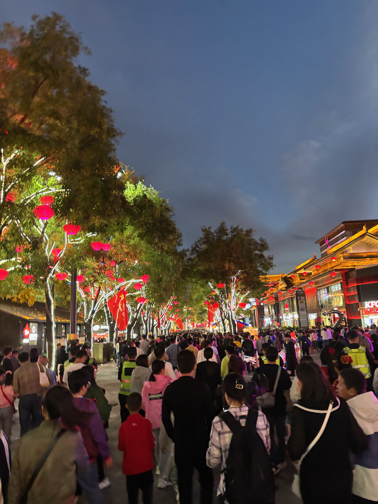通向出口的单向通道上：
最好看的大雁塔照片是在北广场拍的，已经出了大唐不夜城，就是表演音乐喷泉那里：

大唐芙蓉园
大唐芙蓉园是西安最值得去的地方，体验比不夜城好很多，里面有很多大大小小的表演，追着节目的演出节奏跑，能让人一整天都有事干不闲着。
观看顺序上，一进门就可以看到迎宾演出，接着跟着巡游队伍走：
巡游队伍会一路走到紫云楼北广场，然后开始一场梦回大唐的表演：
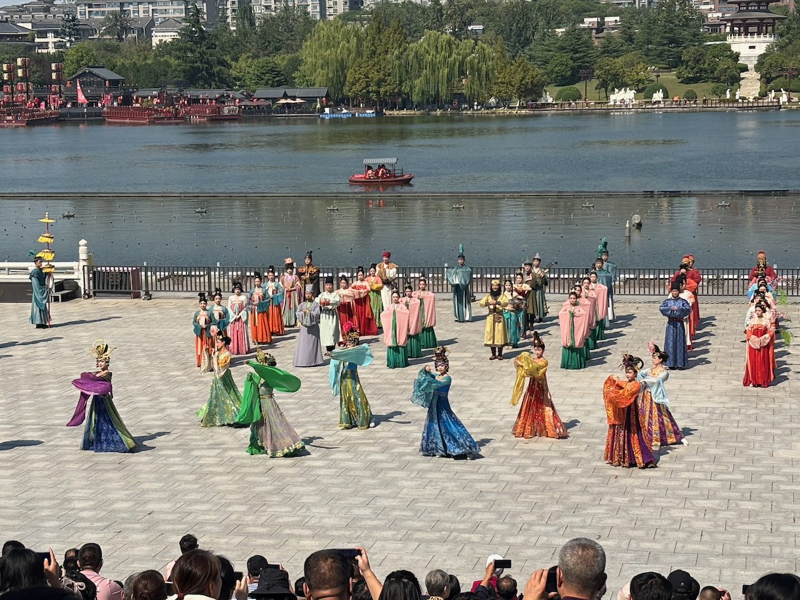演出结束紧接着是音乐喷泉的表演：
这一系列小演出就接近 1 个小时时间，让你入园后的 1 个小时都没闲着，这个时候芙蓉园还一点都没逛呢。
还是在北广场这里，如果时间合适的话，恰好能看到锦绣中华演出，性质上属于汇演，也就是能演的都演，时长 1 个小时，有喷泉、舞蹈和舞狮：
结束后，还能在其他地点看到一些小表演，比如这个音乐：
关于茶神的故事：
长安码头上小姐姐跳舞：
仕女馆里，非常美丽的不倒翁，这不比不夜城里的好看多了：
不倒翁之后有个李白的对诗表演：
后面仕女馆舞台还有个叫曲江花月宴的表演，我没时间看了，因为要赶着去看最终的大表演大唐追梦。
大唐追梦要坐在船上，船会把观众拉到湖中间，紫云楼对面，然后开始演出。
这个视频可以感受到整体的场景：
过程中有 3D 水影的动画：
楼梯上是有人跳舞的：
快到结尾处的一个片段：
整体非常精彩！这样的表演才是真正的大唐风范！
鼓楼、永兴坊
西安的旅程还没有结束，先去了名气很大的赛格，但是感觉没啥逛的，两层女装、一层男装、一层运动装、一层珠宝，让人逛啥，还不如朝阳大悦城好逛。
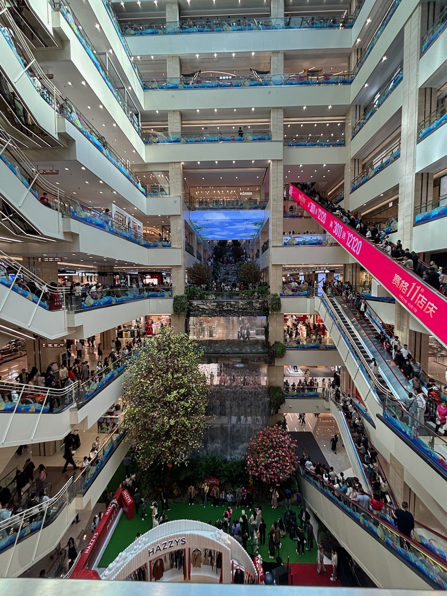然后准备去高家大院，门口看了一眼就知道进不去了：
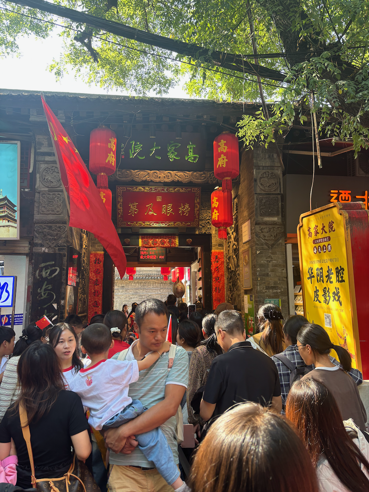原来高家大院和鼓楼在一条街上，就顺着人流往鼓楼方向走，有一种鼓楼大街的感觉：
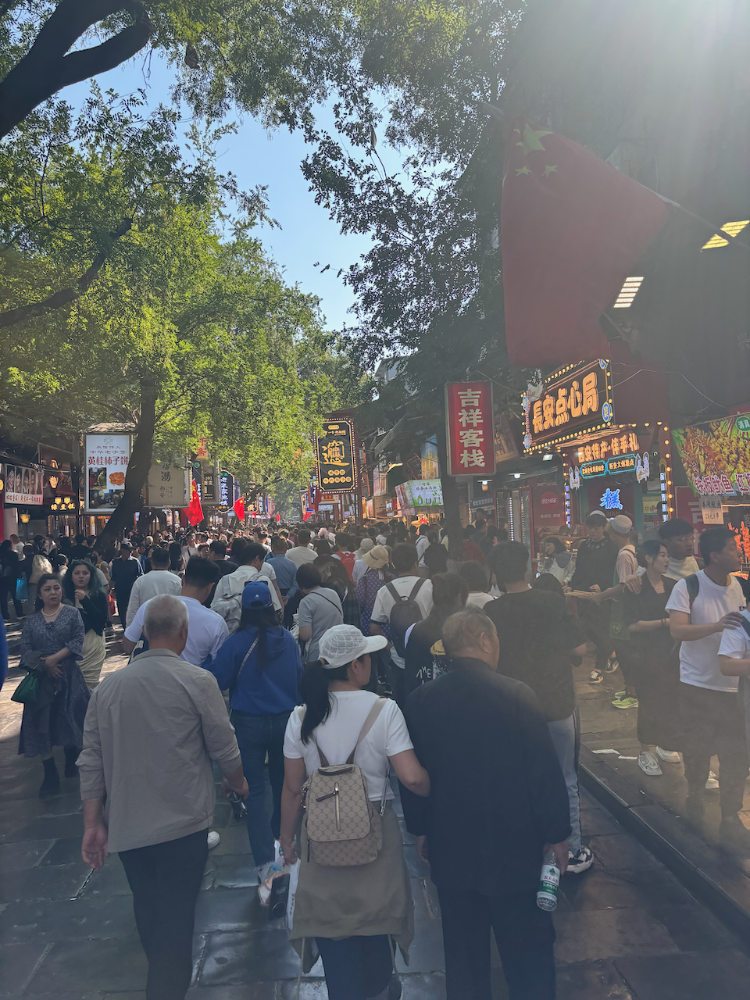鼓楼也就长这样，没兴趣上楼了。
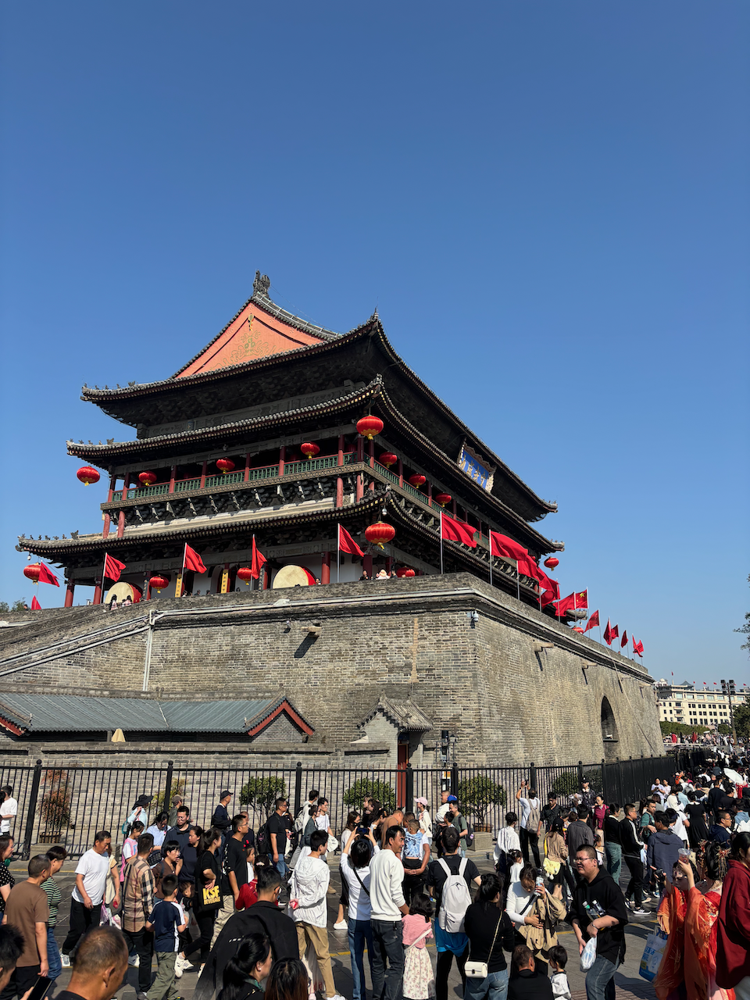出鼓楼的路上有点累，随便找了家皮影看，顺便休息，表演还可以，三打白骨精，像是低配动画片：
 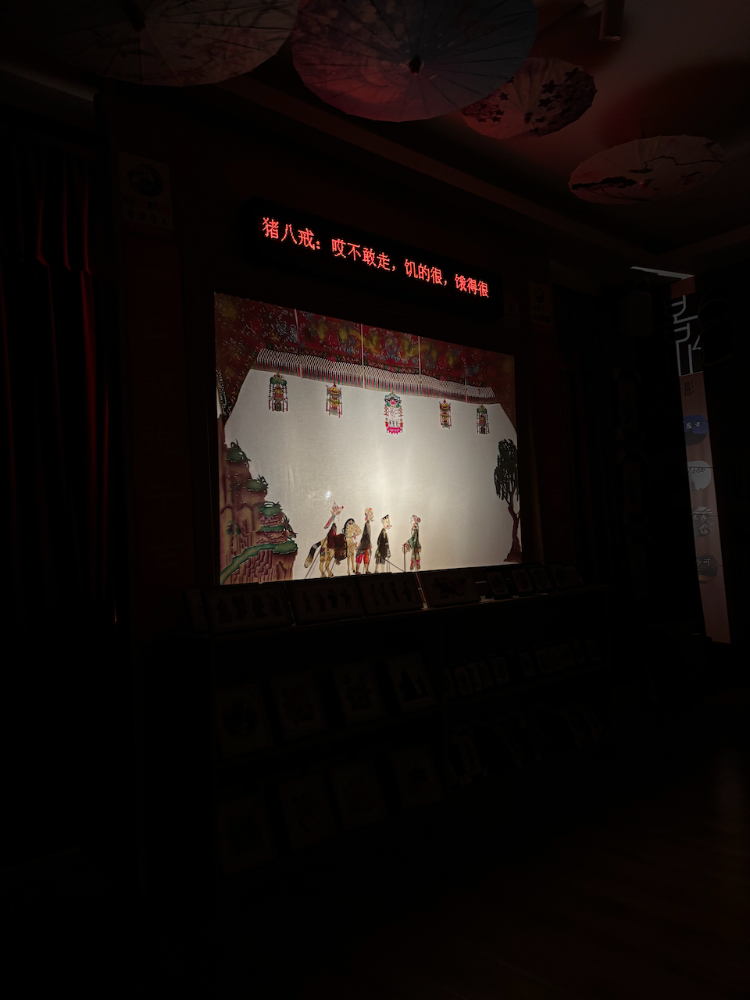
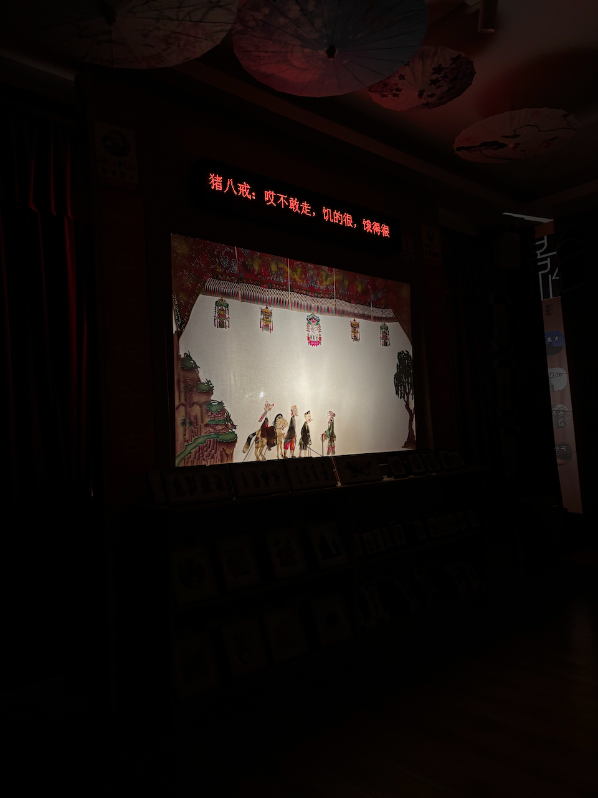
鼓楼出来就去了永兴坊：

永兴坊里有个网红摔碗酒：
虽然也是商业街但还挺热闹的一个地方，还有木偶戏表演：
抖音上很火的铜人可以一起合影：

到了晚上配上灯笼的灯光更有气氛一点：

永兴坊门口就是西安城墙，不过不想上去。
到这里西安的行程就结束了。
其他城市
本来是规划了很多地方的，计划在回北京的路上顺便就去了，包括洛阳的老君山、开封的清明上河园、济南的大明湖等，最终没去成，这两天酒店普遍溢价，看演出也有种 “五岳归来不看山” 的感觉，看过唐山和西安的演出后，不太想看别的了。

结束
最后很喜欢李白在船上吟诗这一段：
天生我材必有用，千金散尽还复来！